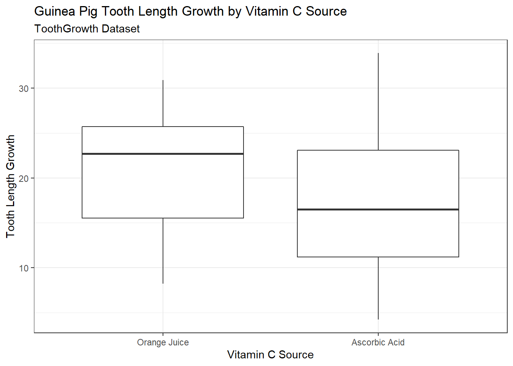

An introduction to statistical inference and practice. Statistical models and parameters, estimators of parameters and their statistical properties, methods of estimation, confidence intervals, hypothesis testing, likelihood function, the linear model. Use of statistical computation for data analysis and simulation.
Course material provided by Professor Karen Huynh Wong and modifications were made by myself.
In this R Lab, you will be guided by your TA to familiarize yourself with the R environment, using and formatting in R Markdown, and producing well-organized outputs. You are expected to have access to R + R Studio + LaTeX in some capacity by this tutorial, whether it be locally installed or accessed through JupyterHub.
?command_name to find the documentation of various commandsFollow the guide as your TA demonstrates these introductory syntax and tools, and use them along with what we covered in this week’s synchronous lecture to complete the exercises at the end of this document.
Some additional resources you may find helpful as you learn is the R Markdown Cheatsheet and the LaTeX Cheatsheet. As you work more in LaTeX, the notation will get easier and become second nature!
R packages are a collection of functions, code, and data sets that are developed by others and can be used to supplement the basic tools in R. R comes with some basic packages, but working with them can be sometimes clunky. You’ll begin by learning how to install packages and load packages, and the difference between these two actions!
Begin by installing and loading the tidyverse package, which is a collection of R packages. We will use this extensively in our course, as all packages within share similar structure and design, making it a very intuitive and versatile tool to master!
Note: Never include a package install in your R chunks in an R Markdown file. R will not be able to knit your document! Instead, run it strictly within your console.
# Students: What do you think the 'message = F' in the R chunk option does?
# Try knitting your document with and without the option
# Can also try `warning = F` to hide warnings
# echo = F` to run the chunk but hide the code
# install.packages("tidyverse")
library(tidyverse)
# Use Ctrl + Alt + I shortcut for creating code chunksLet’s examine some datasets that are already available in R (see library(help = "datasets") for a list of datasets in base R), starting with the ToothGrowth dataset.
# ?ToothGrowth
# Variable Assignment
dat <- ToothGrowth
# Mostly useful for smaller datasets, but for larger ones we prefer to use glimpse and summary
# View(dat)
glimpse(dat)## Rows: 60
## Columns: 3
## $ len <dbl> 4.2, 11.5, 7.3, 5.8, 6.4, 10.0, 11.2, 11.2, 5.2, 7.0, 16.5, 16.5, 15.2, 17.3, 22~
## $ supp <fct> VC, VC, VC, VC, VC, VC, VC, VC, VC, VC, VC, VC, VC, VC, VC, VC, VC, VC, VC, VC, ~
## $ dose <dbl> 0.5, 0.5, 0.5, 0.5, 0.5, 0.5, 0.5, 0.5, 0.5, 0.5, 1.0, 1.0, 1.0, 1.0, 1.0, 1.0, ~summary(dat)## len supp dose
## Min. : 4.20 OJ:30 Min. :0.500
## 1st Qu.:13.07 VC:30 1st Qu.:0.500
## Median :19.25 Median :1.000
## Mean :18.81 Mean :1.167
## 3rd Qu.:25.27 3rd Qu.:2.000
## Max. :33.90 Max. :2.000It looks like there are two groups of data in the ToothGrowth data set. What are they?
What if you only want to study the growth based on one source of vitamin C? How do you go about extracting this information?
# After loading and examining your data, and learning about selecting columns or elements
# from your data set, consider the following two commands below.
# Briefly comment below what these two commands do:
# What does
which(dat$supp == 'VC') #do?
# Extracts which indices are TRUE# What does
dat[dat$supp=='VC', 1] #do?
# extracts the `len` variable/column, where `supp` is 'VC'
# Alternative 1
# Pipe operator shortcut: Ctrl + Shift + M
dat %>%
filter(supp == "VC") %>%
select(len)
# Alternative 2
# This is basically Alternative 1 without the pipe operator
select(filter(dat, supp == "VC"), len)# Below we can also extract the other 2 columns
dat[dat$supp=='VC', 2]
dat[dat$supp=='VC', 3]After examining the data set, what are some study questions we can ask? Make some suggestions in the Teams chat!
Below are some questions suggested by students in the chat: * Does dosage and length have a positive correlation? * Which vitamin contributes to the most growth?
Find the (sample) mean and standard deviation of tooth length in the Vitamin C group and again in the group that only received Orange Juice. What can be said based on the numbers computed about the differences between the two groups?
Do this using the formula, instead of the functions mean() or sd() to practice using R as a calculator!
# Task for students: try to recreate the mean and variance values through
# Calculations in R, and compare them with the values you should get through
# mean() and sd() commands in R
# Create tooth length variable for the vitamin C
vc <- dat[dat$supp=='VC', 1]
# take the sum of the tooth length, then divide by the number of values
n <- length(vc)
mean.vc <- sum(vc)/n
mean.vc## [1] 16.96333# Can also compute using a for loop
mean.vc2 <- 0
for (i in 1:n){
mean.vc2 <- mean.vc2 + vc[i]/n
}
mean.vc2## [1] 16.96333# Compare to mean() function
mean(vc)## [1] 16.96333# Standard deviation
var.vc <- sum((vc - mean.vc)^2)/(n-1)
sd.vc <- sqrt(var.vc)
sd.vc## [1] 8.266029# Compare to sd() function
sd(vc)## [1] 8.266029Below is a repeat of the above but for OJ (orange juice):
# Orange Juice
oj <- dat[dat$supp=='OJ', 1]
# Mean
n <- length(oj)
mean.oj <- sum(oj)/n
mean.oj## [1] 20.66333# Can also compute using a for loop
mean.oj2 <- 0
for (i in 1:n){
mean.oj2 <- mean.oj2 + oj[i]/n
}
mean.oj2## [1] 20.66333# Compare to mean()
mean(oj)## [1] 20.66333# Standard deviation
var.oj <- sum((oj - mean.oj)^2)/(n-1)
sd.oj <- sqrt(var.oj)
sd.oj## [1] 6.605561# Compare to sd()
sd(oj)## [1] 6.605561Trying to type the variance formula in plain-text is not visually appealing, nor helpful in communicating (it’s very difficult to read!). The beauty of LaTeX is the format is fairly intuitive, such as $\frac{numerator}{denominator}$ will render as \(\frac{numerator}{denominator}\) (the dollar signs indicate the start and end of the math setting, double-dollar sign will have the math rendered centre to the page). For example, the sample variance can be written as:
\[s^2 = \frac{\sum_{i=1}^n (x_i - \bar{x})^2}{n-1}\] Try to write the sample mean in LaTeX and quote the values computed in the R chunk above!
For the mean we can use \bar{x}_n = \frac{\sum_{i=1}^n x_i}{n}: \[\bar{x}_n = \frac{\sum_{i=1}^n x_i}{n}\]
Numerical summaries can be powerful to provide concrete, numerical evidence to support our claims. Using graphical displays can also communicate clearly in a visual manner the story that our numbers tell, and can sometimes be a more powerful communication tool than numbers because we can see the scale of differences. Let’s use the ggplot package in tidyverse to produce side-by-side box plots of how tooth length growth differs between the two sources of vitamin C:
# Focus of this segment: understanding the layering language of ggplot
# Note also the R chunk options that control the alignment and size of
# The output figures
dat %>%
ggplot(aes(x = supp, y = len)) +
geom_boxplot() + # passing aes(x,y) into here works too!
labs(title = "Guinea Pig Tooth Length Growth by Vitamin C Source",
subtitle = "ToothGrowth Dataset",
x = "Vitamin C Source",
y = "Tooth Length Growth") +
scale_x_discrete(labels = c("Orange Juice", "Ascorbic Acid")) +
theme_bw() # there are many different themes from which to choose!
What can we notice about tooth length growth between the two supplement groups?
Practice using visual and numeric features to:
Here are things that we notice:
# Two-sided t-test
t.test(oj,vc)##
## Welch Two Sample t-test
##
## data: oj and vc
## t = 1.9153, df = 55.309, p-value = 0.06063
## alternative hypothesis: true difference in means is not equal to 0
## 95 percent confidence interval:
## -0.1710156 7.5710156
## sample estimates:
## mean of x mean of y
## 20.66333 16.96333# One-sided t-test
t.test(oj,vc,"greater")##
## Welch Two Sample t-test
##
## data: oj and vc
## t = 1.9153, df = 55.309, p-value = 0.03032
## alternative hypothesis: true difference in means is greater than 0
## 95 percent confidence interval:
## 0.4682687 Inf
## sample estimates:
## mean of x mean of y
## 20.66333 16.96333